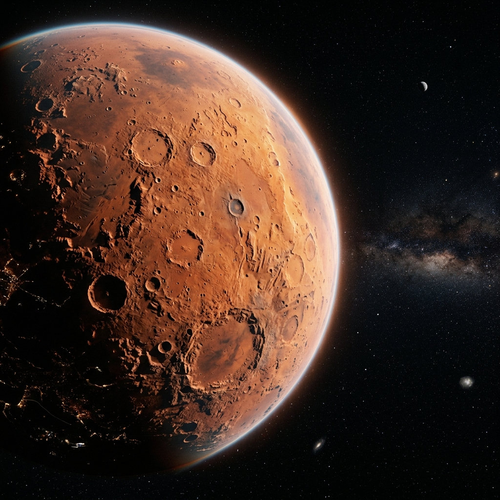

Supernova detected in M82 galaxy
Astronomers confirm a Type Ia supernova event...

The Red Planet
Astronomers confirm a Type Ia supernova event...
NASA selects the Shackleton crater for 2029 landing.
Communication satellites placed on high alert.
Peak visibility: 03:00 UTC